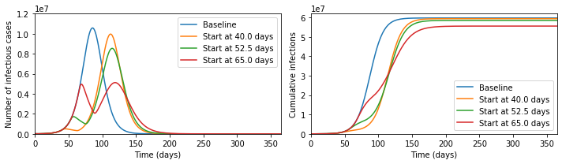

Modelling Herd Immunity
The current coronavirus outbreak (COVID-19) has raised questions about herd immunity, social distancing measures, and the relationship between these. In particular, at time of writing the following Tweet has thousands of retweets and likes.
“With the number of known #coronavirus cases today in South Korea, Italy, Iran, France, Spain and the US, Wuhan was already in lockdown.”
Read why every day we wait to make decisions is costlier that’s the previous:https://t.co/6hX74wiZgF
I think that this presents an incomplete picture of the policy considerations.


To see why, let us start by defining the most important concept in epidemic modelling, the basic reproduction number \(R_0\). This is equal to the average number of infections caused by a case early in the epidemic, so that for \(R_0 = 3\), the early transmission tree might look something like the cartoon on the left. This exhibits the exponential growth that is so worrying at present. We have first one case, then three, then nine, then 27, then ...
Now suppose that immunity has been built up, either through vaccination or by illness followed by recovery, so that two thirds of people are immune. This means that each case will have three contacts that would have caused infection in the absence of immunity, but on average two of these will be immune and so the situation looks more like the cartoon on the right. We say that the reproduction number is reduced from its basic value to \(R_t = 1\).
While the individuals in the cartoon with a crossed out arrow pointing towards them are literally immune, the people that they would have infected benefit from herd immunity. They can be infected if exposed, but will not be. This is particularly beneficial to the people who are particularly vulnerable to the disease, who might die if they catch it. The general formula for herd immunity is that when over \((1 - (1/R_0))\times 100\%\) of the population is immune, then the epidemic will start to die out.
Now suppose we simulate a more realistic scenario. The Python code for this is at the bottom of this post, and it is much simpler than the models that are typically used to guide policy, but captures the basic phenomena of interest. In particular, we suppose that we can reduce transmission through social distancing measures like closing schools and workplaces, but that this is only possible for three weeks. This represents the fact that the costs of not educating children and not doing other activities can become quite large over time, and in some cases can lead to levels death and illness that could exceed those due to the unchecked epidemic. Running the epidemic model with these interventions gives the following results for cases at a given moment and total cases over time.

It seems that the Tweet was right - look at the difference the early intervention makes! But now let us zoom out of the graph; then the picture looks like the below.
In fact, the later intervention dramatically reduces the burden on the healthcare system, cutting in half the maximum numbers ill and potentially needing treatment at any one time, and significantly reduces the final number infected, which the earlier interventions fail to do.
The reason that this happens is that social distancing measures do not lead to herd immunity, so once they are lifted the epidemic starts again. In the absence of a vaccine, it is therefore meaningless to speak about whether a policy 'aims' to get herd immunity or not, since every country in the world will reach herd immunity unless it is able to implement social distancing for an indefinite period of time.
What mitigation policies should aim to do, therefore, is to reach herd immunity with the minimal human cost. This will be extremely difficult, and at every stage we will be dealing with large uncertainties. I would not want to be the person who ultimately made the policy decisions. But to say that early interventions are always better is incorrect.
# Pull in libraries needed %matplotlib inline import numpy as np from scipy import integrate import matplotlib.pyplot as plt
# Represent the basic dynamics def odefun(t,x,beta0,betat,t0,t1,sigma,gamma): dx = np.zeros(6) if ((t>=t0) and (t<=t1)): beta = betat else: beta = beta0 dx[0] = -beta*x[0]*(x[3] + x[4]) dx[1] = beta*x[0]*(x[3] + x[4]) - sigma*x[1] dx[2] = sigma*x[1] - sigma*x[2] dx[3] = sigma*x[2] - gamma*x[3] dx[4] = gamma*x[3] - gamma*x[4] dx[5] = gamma*x[4] return dx
# Parameters of the model N = 6.7e7 # Total population i0 = 1e-4 # 0.5*Proportion of the population infected on day 0 tlast = 365.0 # Consider a year latent_period = 5.0 # Days between being infected and becoming infectious infectious_period = 7.0 # Days infectious R0 = 2.5 # Basic reproduction number in the absence of interventions Rt = 0.75 # Reproduction number in the presence of interventions tend = 21.0 # Number of days of interventions
beta0 = R0 / infectious_period betat = Rt / infectious_period sigma = 2.0 / latent_period gamma = 2.0 / infectious_period t0ran = np.array([-100, 40, 52.5, 65]) def mylab(t): if t>0: return "Start at " + str(t) + " days" else: return "Baseline" sol=[] for tt in range(0,len(t0ran)): sol.append(integrate.solve_ivp(lambda t,x: odefun(t,x,beta0,betat,t0ran[tt],t0ran[tt]+tend,sigma,gamma), (0.0,tlast), np.array([1.0-2.0*i0, 0.0, 0.0, i0, i0, 0.0]), 'RK45', atol=1e-8, rtol=1e-9))
plt.figure(figsize=(10,3)) plt.subplot(1,2,1) for tt in range(0,len(t0ran)): plt.plot(sol[tt].t,N*(sol[tt].y[3] + sol[tt].y[4]).T, label=mylab(t0ran[tt])) plt.xlim([30,70]) plt.ylim([0,7e6]) plt.xlabel('Time (days)') plt.ylabel('Number of infectious cases') plt.legend() plt.subplot(1,2,2) for tt in range(0,len(t0ran)): plt.plot(sol[tt].t,N*sol[tt].y[5].T, label=mylab(t0ran[tt])) plt.xlabel('Time (days)') plt.ylabel('Cumulative infections') plt.legend() plt.xlim([30,70]) plt.ylim([0,1e7]) plt.tight_layout() plt.show()
plt.figure(figsize=(10,3)) plt.subplot(1,2,1) for tt in range(0,len(t0ran)): plt.plot(sol[tt].t,N*(sol[tt].y[3] + sol[tt].y[4]).T, label=mylab(t0ran[tt])) plt.xlim([0,tlast]) plt.ylim([0,1.2e7]) plt.xlabel('Time (days)') plt.ylabel('Number of infectious cases') plt.legend() plt.subplot(1,2,2) for tt in range(0,len(t0ran)): plt.plot(sol[tt].t,N*sol[tt].y[5].T, label=mylab(t0ran[tt])) plt.xlabel('Time (days)') plt.ylabel('Cumulative infections') plt.legend() plt.xlim([0,tlast]) plt.ylim([0,6.2e7]) plt.tight_layout() plt.show()